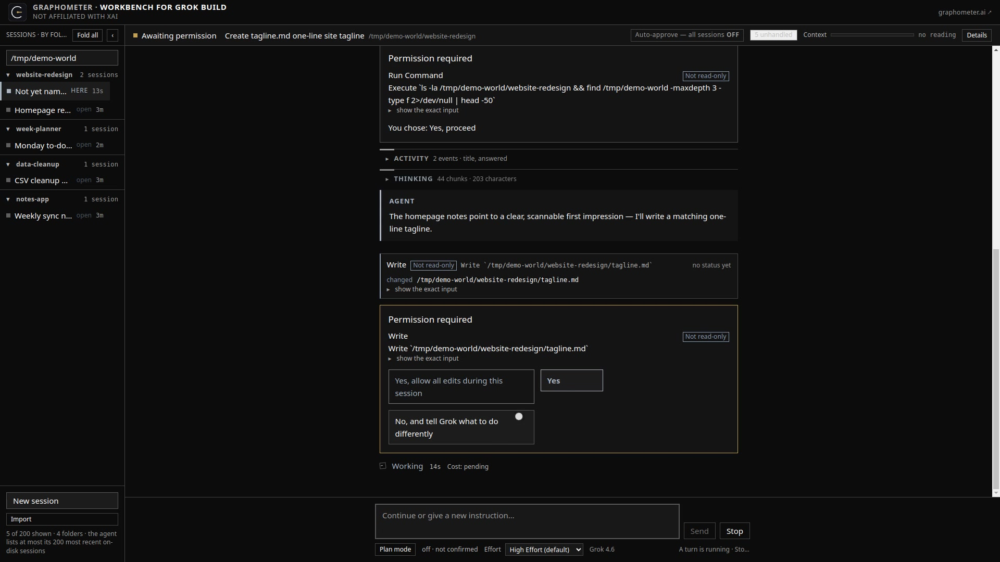

Graphometer Workbench
See what Grok Build is doing, and stay in control.
A friendly, readable window on the Grok Build coding agent, for people who would rather vibe-code than live in a terminal. Everything the agent does becomes plain and clickable: it asks before it touches your files, you review and undo one change at a time, and it survives the agent dying.
MIT licensed · 1,400+ checks green · Runs on your machine and collects nothing itself · Linux, or Windows via WSL2 · Node.js 22+ and Grok Build, installed separately
During development we built a live progress number, checked it against what the agent actually reported, found it wrong, and removed it. A number the Workbench cannot stand behind is a number it does not display.

Watch the filmJust over three minutes, edited from real screen captures of the running app, narrated by the founder. Nothing on screen is mocked or generated.
Graphometer builds instruments that make AI systems easier to see, test, and control, and publishes measured records of models actually running. Free, open, and every measured number traces to a recorded run.
A graphometer is a surveyor's instrument for measuring angles. We took the name seriously.
I run models locally
Field cards: measured records of models running on one desktop, from a 2.6B to the complete 2.78-trillion-parameter Kimi K3.
The field cardsI direct a coding agent
The Workbench puts the agent's sessions, its changes, and its questions into one plain, readable window on your machine.
The WorkbenchI test model endpoints
Routecheck runs one command against an OpenAI-compatible endpoint and writes a dated, plain-English diagnostic card.
RoutecheckQwen3.8-27B's own draft head decoding prose, measured the day the weights went public.
The complete Kimi K3, topology intact under a 1-bit expert build, generating on one desktop at about 0.2 tokens per second.
What llama.cpp's shipped speculation default did to prose, in the same run that made structured output 22.5% faster.
Graphometer Droplet
An independent compatibility kit for Liquid LFMs. A small command line tool that diagnoses how a locally served model handles tool calling, repairs what a chat template drops, and verifies the result against recorded fixtures.
Graphometer Workbench
The featured instrument above: the agent's sessions, permission cards in its own words, per-change review and undo, and a context meter whose numbers add up, in one local window. MIT licensed, launch film on the page.
Routecheck
One command against an OpenAI-compatible endpoint produces a dated diagnostic card, human-readable and machine-readable, with every raw response retained: the output budget floor, the thinking toggle, tool calls, structured output, retrieval, throughput.
Muse Glimmer 30B: trained at 16, asked for 3
Meta's drafter drafts a block of 16 tokens, llama.cpp's generic draft length is 3, and the flags Meta's card documents leave that default in charge: 2.17 times the throughput on structured work.
Qwen3.8-27B: day zero
Downloaded, hash-verified, served and measured on release day: seven profiles, a genuine Apache 2.0 license, the draft head at 72.4 tokens a second.
Kimi K3
The complete 2.78-trillion-parameter model generating on one desktop at about 0.2 tokens per second, with nothing softened.
Qwen3.5 (122B and 397B)
26 to 38 tokens per second on the 122B, 14 to 20 on the 397B, and the confidence-gate trap measured.
Mistral Medium 3.5
A dense 128B made usable on one desktop: about 1 token per second alone, 2 to 5 with a vocabulary-repaired draft model.
LFM2.5-2.6B
Liquid AI's small model: the context window as measured, which file to download, and the output budget it really needs.
All field cards
The whole set in one place, with a comparison table: what each model is, what it measured, and when.
Reasoning effort is a sentence, not a dial: measured on one Qwen3.8-27B template
On the chat template shipped inside the Qwen3.8-27B GGUF we served, the setting is not a sampler dial: the value you send is looked up in that template and a matching instruction is pasted into your prompt as a system message. xhigh adds 42 tokens, low adds 30, medium adds nothing at all.
Release watch: Qwen3.8
What actually shipped versus what was promised, verified with dates, including the license split between the 27B and the 2.4T Max weights.
The wrong flag: a 675B decode gap traced to a default
Six days of our own records blamed warmup for a 675B decode-speed gap. A pre-registered three-arm A/B traced it to llama.cpp's default thread count instead, and the correction is published in full.
Slower by default: llama.cpp's speculation gate, measured
llama.cpp's shipped speculation default made prose 19.8% slower than no speculation at all while structured output ran 22.5% faster, in the same run. 160 paired measurements.
Empty Answer: the thinking-budget trap, measured
A reasoning model can spend the whole output budget thinking and hand back nothing at all: a successful call, no error, an empty answer, and a bill for the hidden tokens.
Which Qwen should I run?
A hardware-honest guide to the whole family, from a laptop to a 397B on one desktop. Measured rows labeled measured, vendor rows labeled vendor.
Measured rows are labeled measured. Vendor rows are labeled vendor. Every measured number traces to a recorded run, studies ship their raw data as downloadable packages, and when our own records turn out wrong, the correction is published in full.
How Graphometer measuresNo scripts, no tracking, no cookies: this site is static, and you can view source to check.
Field reports on the models we study, curated local AI kits that are honest about hardware, datasets built to fix measured weaknesses, and small tools that make good models easier to live with.